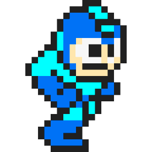
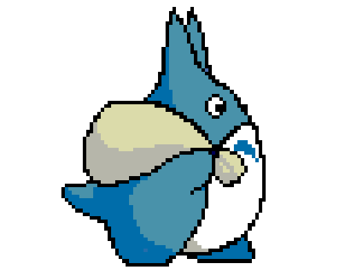

HOW TO DO THE ANIMATION ON CSS :3
นี่คือสิ่งที่เราจะได้ !!!



มันคืออะไร
ในบทเรียนนี้ ผู้เรียนจะได้ทดลองทำ Animation ด้วย CSS นั่นเอง จริงๆแล้ว ดูเหมือนจะยาก แต่มันไม่ยากนะ ลองมาทำตามกันได้
Requirement
- ความรู้เบื่องต้น HTML (ง่ายๆหน่าา )
- Text Editor ดีๆซักตัว
- ความอยากเรียนรู้ไงง :D
ขั้นตอน !
- สร้างเอกสาร HTML เบื้องต้นดังนี้
<html> <head> <title>ทดสอบหัวข้อเว็บ</title> <link rel="stylesheet" href="css/animate.css"> </head> <body> เนื้อหาเราจะลงตรงนี้ </body> </html> - มาตกแต่ง Style ต่างๆ ลงไปใน File CSS
- ถึงขั้นตอนสำคัญแล้ว !
-
ใน File CSS เราจะต้องกำหนดลักษณะต่างๆดังนี้
- ส่วน .movemove ใส่ Attribute ที่ชื่อ Animation เพื่อสั่งให้มีการเคลื่อนที่ตามเวลา และ Keyframe ที่ชื่อ gogo
- สร้าง keyframe gogo โดยกำหนดให้ เวลาเป็น % และกำหนดท่าทางในแต่ละช่วงเวลา ด้วย Attribute transform
- เพียงเท่านี้ ก็จะได้ Animation เก๋ๆ แบบไม่ต้องใช้ Javascript แล้น !
.movemove{ animation: gogo 3s ease-in infinite; animation-direction: reverse; padding-left: 100px; } @keyframes gogo { 0% { transform: translate(100%, 0); } 45% { transform: translate(10%, 0); } 55% { transform: rotateY(180deg) translate(10%, 0); } 100% { transform: translate(100%, 0) rotateY(180deg); } }